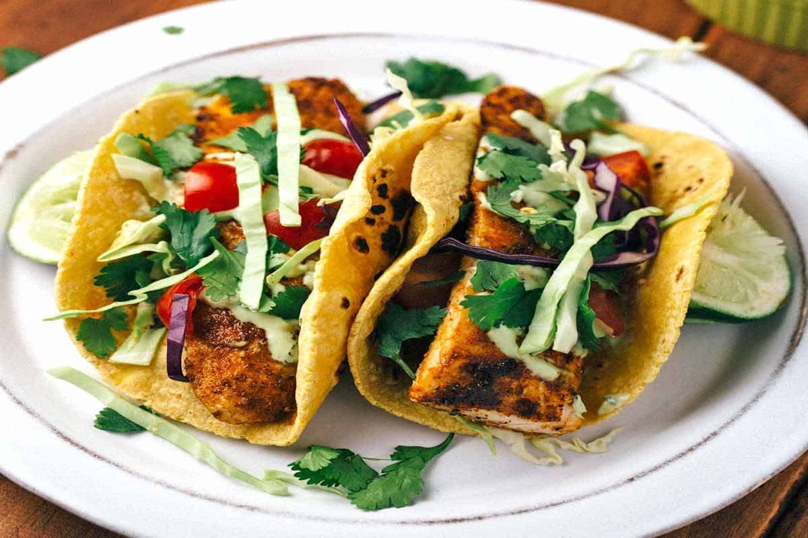

 Love fish tacos? Well, these are the end-all be-all. What makes these so special? The fish-we use cod, but any flaky variety works-marinates in a mixture of lime juice, chilli powder, and cumin that will become your standard go to meal. But the real gem of this recipe is the cabbage slaw-don't skit it. Trust us! It only takes a few minutes to toss together and it's brightness is the perfect condiment to the spiced cod!